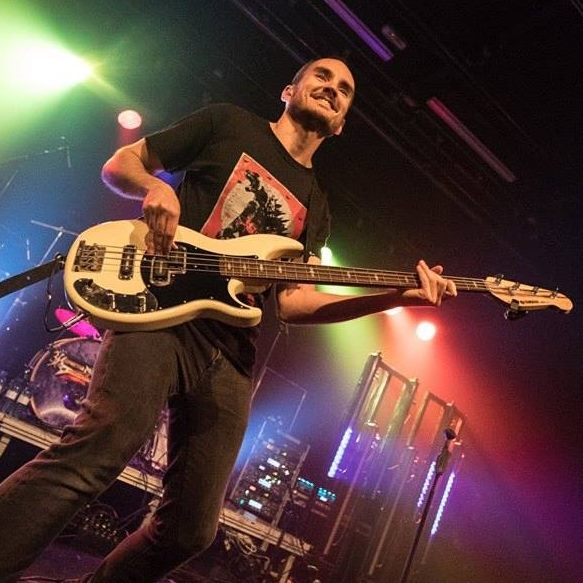

Benvinguts a la meva pàgina de currículum vitae. Espero que llegint aquestes línies i consultant els enllaços us feu una idea de a què em dedico i que faig a la vida.
Atentament,
Oscar
La Revista 360upf, que va per la 5a edició, ha aconseguit:
La web de la UPF ha aconseguit una molt bona acollida i acosta la Universitat als estàndards més moderns de maquetació web.
El nou Campus Global ha aconseguit simplificar l'experiècia d'usuari i agilitzar-ne l'ús.
Toco el baix elèctric desde els 16 anys i he tingut infinitat de grups en aquests anys, com a mostra, alguns noms